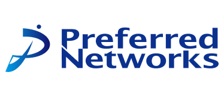
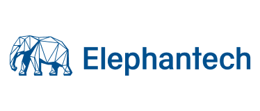
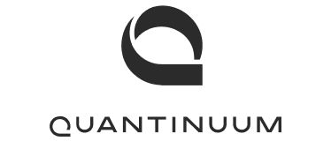
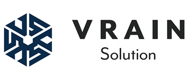
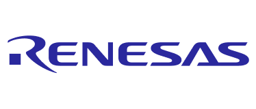
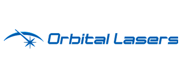
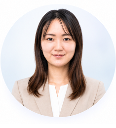
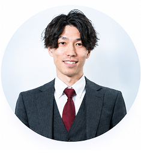
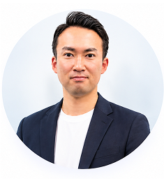

株式会社Preferred Networks
現実世界を計算可能にする、AI・メカトロ技術開発
- ポジション
- エンジニア・リサーチャー
- 年収レンジ
- 560〜2,000万円
- 業務内容
- 研究成果を実装・サービス製品化し、品質検証を通じて価値を磨き上げるとともに、社内外の最先端研究を取り込み、新技術の創出を担う。
- 勤務地
- 東京（リモート可）
FOR MECHATRONICS RESEARCHERS
専門性を理解するパートナーと、次のキャリアへ。
無料でキャリア面談を予約する →利用規約、プライバシーポリシーに同意の上サービスをご利用ください。
他では出会えない求人を多数保有






※募集を終了している場合があります。
OPEN POSITIONS
メカトロニクス領域のキャリア支援や技術動向に精通したアドバイザーが、専門技術と志向を深く理解した上で、あなたの可能性を広げる求人をご提案します。
株式会社Preferred Networks
エレファンテック株式会社
OptQC株式会社
株式会社VRAIN Solution
VOICE
同じ「メカトロ領域」でも、悩みは十人十色。
年代もキャリアも異なる方々の、リアルな面談体験をご紹介します。
機械設計エンジニア
20代
設計を続けるべきか、制御やAI・ロボティクスへ挑戦すべきか。迷いが整理できました。
量産設備の機械設計を担当していましたが、日々の開発に追われ、「この経験は5年後、10年後も市場で評価されるのだろうか」と漠然とした不安を感じていました。キャリア面談では、自分で調べ切れておらずぼんやりとした理解しかできていなかった「ディープテック」の市場トレンド情報や、自身の設計スキルと親和性の高いフィジカルAIの領域での人材ニーズを体系的にご説明いただいたことに加え、ロボティクスや自動化設備、半導体製造装置などへのキャリアの広がりも教えていただき、「この選択肢で転職を進めよう」と前向きな気持ちになれました。これまでの経験やスキルを一緒に整理していただき、自分の強みが単なるCAD設計ではなく、「製造現場目線で開発を進める力」にあることも客観的に理解できました。技術者として今後の方向性に迷っている方には、一度相談してみる価値があると思います。
制御・組込みエンジニア
30代
転職先ではなく、自分が実現したい技術者人生を一緒に考えてもらえました。
転職活動を始めた当初は、「年収を上げたい」「より大きな会社へ行きたい」という程度の考えしかありませんでした。面談では、PLCやモーション制御、画像処理、自動化設備の経験を深掘りしていただき、「自分は新しい装置をゼロから立ち上げることに最もやりがいを感じている」ということに気付かされました。その上で、単に求人を紹介するのではなく、「この会社なら新規開発比率が高い」「ここなら技術選定から関われる」といった、仕事内容まで踏み込んだ提案をしていただきました。結果として、自分では候補にも入れていなかった企業と出会い、今ではより大きな裁量で開発に携わっています。求人情報だけでは分からない「技術者としての働き方」を一緒に考えてくれる点が、とても印象的でした。
メカトロ開発リーダー
40代
管理職を続けるか、もう一度開発の最前線に戻るか。その答えが見つかりました。
管理職になってからは、会議や予算管理、人材育成が業務の大半となり、実際に設計や開発に携わる時間がほとんどなくなっていました。「このままマネジメントを極めるべきか、それとも技術者としてもう一度挑戦するべきか」という悩みを相談したところ、私のキャリア全体を俯瞰して整理してくださいました。特に印象的だったのは、「マネジメント経験も技術力の一部であり、開発責任者やプロジェクトリーダーとして高く評価される」という視点でした。これまで“技術か管理か”の二択で考えていましたが、その両方を活かせるポジションがあることを知り、視野が大きく広がりました。技術者として次のキャリアで悩んでいたところ、とても有意義なアドバイスをいただける時間だったと思います。
開発エンジニア
50代
30年積み重ねた技術を活かせる環境があることを実感しました。
長年、車載設備や精密機械の開発に携わってきました。「技術者として年齢に関係なく、現場で手を動かし続けたい」という思いを持っていた一方で、「今さら転職しても評価されないのではないか」「転職の受け入れ先がないのではないか」という不安もありました。面談では、これまでの技術はもちろん、上記のような「ありたい姿」を丁寧にヒアリングしていただき、この年齢からでも「長期で働ける環境」という観点で伴走支援に最適なポジションのご紹介や選考アドバイスをしていただきました。年齢の観点から書類選考も上手くいくかとはと心配をしていましたが、ご担当アドバイザーの方が先方企業とも上手くつなぎくださり、非常にスムーズに選考を進め、希望する企業から内定をいただくこともできました。「これから10年と言わず、もっと長期で開発に携われる環境がある」と教えていただいたこと、「これからのキャリアも長いです」と仰っていただけたことが非常に嬉しく、お話してきたことに感謝をしています。経験豊富なエンジニアの方にこそ、おすすめしたい面談だと思います。
個人が特定されないよう、一部情報・表現を変更しています。
WHAT WE OFFER
技術がわかるアドバイザーだから、専門性を正しく翻訳し、次のキャリアを具体化できます。
研究テーマや使用技術、実績を整理し、社外でどう評価されるかをデータで提示します。
求人媒体に出回らない、企業のR&D・先端技術部門の求人を直接ご紹介。スタートアップから大手企業まで、幅広い選択肢をご提案します。
現場に残るか、マネジメントに進むか。両方の選択肢と実例を踏まえて一緒に整理します。
技術面接特有の評価ポイントを踏まえた対策と、企業との年収・条件交渉をアドバイザーが担います。
PROCESS
STEP 01
入力は3分程度
STEP 02
オンラインで30〜60分を予定
STEP 03
マッチング度の高い順にご紹介
CAREER ADVISORS
技術知見を持ったキャリアアドバイザーが、今の研究領域の動向や、あなたの今後のキャリアを一緒に考えます。

新卒でPMOとしてプロジェクト推進に従事後、人材サービス業界へ転身しキャリアアドバイザーとして活動。現在はCoA Nexusにて、バイオ・創薬、製造業・メカトロニクス、IT領域の専門人材のキャリア支援・採用支援に携わる。国家資格キャリアコンサルタント、メンタルヘルスカウンセラー資格を保有。
人生全体を見据え、中長期で伴走する

人材紹介会社・HRテック企業にて、製薬・化学・製造業、IT・SaaS、コンサルティング領域を中心に、研究開発からCxOクラスまで幅広い職種の採用支援に従事。新規事業立ち上げやスタートアップでの組織拡大も経験。現在は研究・開発者向けキャリア支援事業の立ち上げに参画中。
研究者ならではの課題に、寄り添う支援を

製造業・自動車関連分野での法人営業を経て、2021年に人材紹介業界へ転身。エグゼクティブサーチや自動車業界の採用支援を経て、現在はロボティクス、Physical AI、FA・製造DX、半導体、航空宇宙など製造業・ディープテック領域の採用支援とキャリアコンサルティングに従事中。
候補者と共に、納得感のあるキャリア選択を